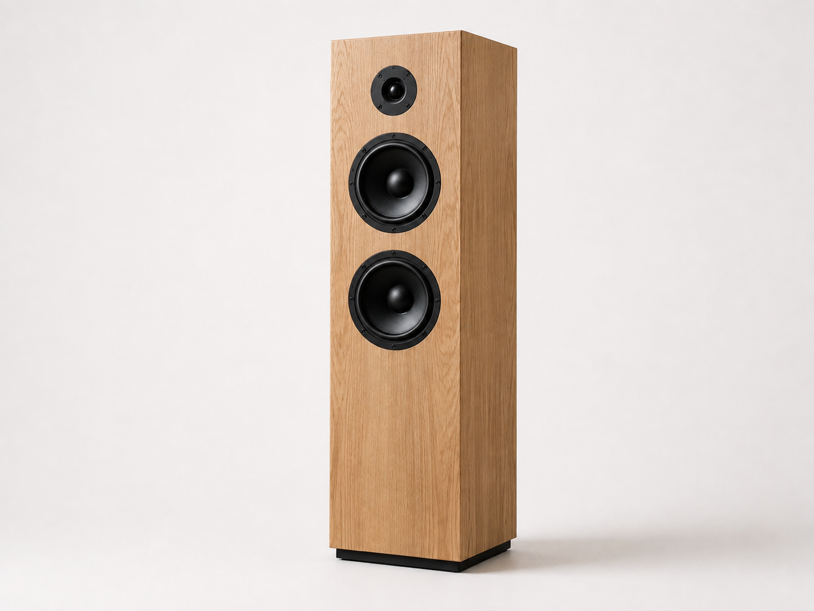

01 / SPEAKER
設置する空間の広さと過ごし方に合わせて、木材、サイズ、音のバランスを調整したフロア型スピーカー。
- TYPE
- フロア型スピーカー
- MATERIAL
- オーク材・金属・スピーカーユニット
- ROLE
- 設計・木部制作・組み立て・調整
- USE
- 住宅・リビング

CONCEPT
設計について広いリビングでも音が一方向に偏らず、低音から高音まで自然に届くことを考えて設計しました。
木の存在感を残しながら、家具や内装の中で強く主張しすぎない形に整えています。
DETAILS
素材と仕上げ正面と側面で木目が不自然に途切れないよう、材料の向きと接合部分を調整しています。
各ユニットの位置と間隔を整え、正面の構成が複雑になりすぎないようにしています。
木の質感を残しながら、日常の中で扱いやすい表面に仕上げています。
SPECIFICATIONS
仕様- TYPE
- 3-WAY FLOOR SPEAKER
- MATERIAL
- OAK
- DIMENSIONS
- W 220 × D 280 × H 920 mm
- UNIT
- 160 mm WOOFER / 80 mm MID / 25 mm TWEETER
- FINISH
- NATURAL OIL
- PRODUCTION
- 2026
PROJECT SUMMARY
制作を終えてFLOOR SPEAKER 01では、木製の筐体そのものが空間の中で強く主張しすぎず、家具や内装の一部として自然になじむ佇まいを大切にしました。正面から側面へ続く木目の流れ、ユニットの配置、角や接合部の見え方を一つずつ確認し、装飾を加えるのではなく、素材と構造がそのまま形になるように整えています。また、完成した状態だけで音を決めるのではなく、設置する部屋の広さや壁との距離、普段の過ごし方や聴く音楽を踏まえて位置と聞こえ方を調整します。木の質感、日常での扱いやすさ、音の聞こえ方の三つを切り離さず、長く使う中で空間になじんでいくスピーカーを目指した作品です。